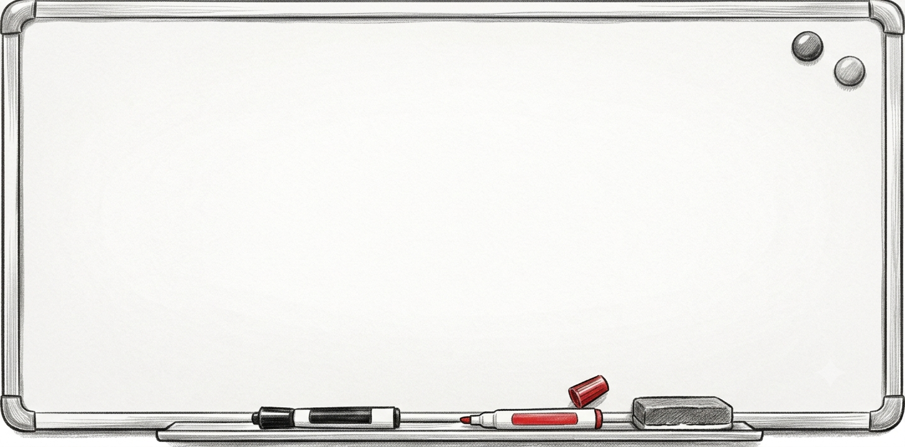

Projects
A live shelf of active builds, planned ideas, fan experiments, and future systems.
Some projects are real today, some are still loading, and the labels stay honest. v1.0 keeps this page to project cards, not full detail pages.

Roadmap summary. NOW: Home live, About merged, Projects fridge. NEXT: Dev Logs tablet, Release polish. LATER: Crisper, Career Tracker, Experiments.
Fan project - not original IP, not affiliated with or endorsed by the original rights holders. Fan projects are labeled separately from original iTryKetchup Studio work.